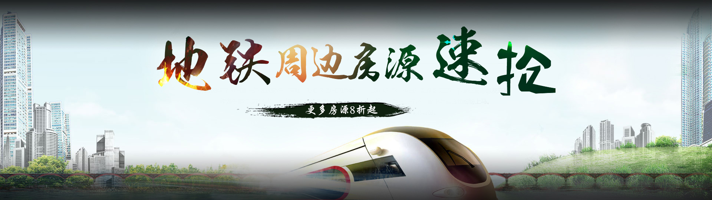

<!DOCTYPE html>
<html lang="en">
<head>
    <meta charset="UTF-8">
    <meta name="renderer" content="webkit">
    <title>租客生活</title>
    <link rel="shortcut icon" href="images/mian_logo.ico">
    <link rel="stylesheet" type="text/css" href="public/common/css/public.css?20170629_1"/>
    <link rel="stylesheet" type="text/css" href="public/ext/layui/css/layui.css?20170629_1" />
    <link rel="stylesheet" type="text/css" href="css/newLifeBanner.css?20170629_1" />
    <link rel="stylesheet" type="text/css" href="css/newLife.css?v=20180411" />
</head>
<body>
<!------- 头部 ------->
<div id="header_item"></div>
<!------- bannber ------->

<div class="slide-main" id="touchMain">
    <a class="prev" href="javascript:;" style="border: 0;" stat="prev1001"></a>
    <div class="slide-box" id="slideContent">
        <!--<div class="slide">
            
        </div>
        <div class="slide">
            
        </div>
        <div class="slide">
            
        </div>-->
    </div>
    <a class="next" href="javascript:;" style="border: 0;" stat="next1002"></a>
    <div class="item" id="bannerItem">
        <!--<a class="cur" stat="item1001" href="javascript:;"></a>
        <a href="javascript:;" stat="item1002"></a>
        <a href="javascript:;" stat="item1003"></a>-->
    </div>
</div>
<!-------- bannber  end ------>
<div class="rwzContent">
    <ul class="con" id="rwzList">
        <!--<li>
            <dl>
                <dt></dt>
                <dd>
                    <h3><strong>人物志</strong><span>第一期 跑步给我真实</span></h3>
                    <span class="rwzTime">2016-06-09</span>
                    <p>跑步给我真实”这是程晚秋给我留下的印象最深的一句话。第一次和程晚秋见面，我们约在了她工作地的附近，是新街口的一个咖啡馆，天气很程晚秋给我留下的印象最深的地的附近，是新街口的一个咖啡馆</p>
                    <a href="javaScript:;">阅读全文</a>
                </dd>
            </dl>
        </li>
        <li class="endLi">
            <dl>
                <dt></dt>
                <dd>
                    <h3><strong>人物志</strong><span>第一期 跑步给我真实</span></h3>
                    <span class="rwzTime">2016-06-09</span>
                    <p>跑步给我真实”这是程晚秋给我留下的印象最深的一句话。第一次和程晚秋见面，我们约在了她工作地的附近，是新街口的一个咖啡馆，天气很程晚秋给我留下的印象最深的地的附近，是新街口的一个咖啡馆</p>
                    <a href="newLifeDetails.html">阅读全文</a>
                </dd>
            </dl>
        </li>-->
    </ul>
</div>
<!------- footer ------->
<div id="footBottom"></div>
</body>
<script type="text/javascript" src="public/common/js/jquery-1.8.0.min.js"></script>
<script type="text/javascript" src="public/ext/layui/layui.all.js"></script>
<script type="text/javascript" src="public/common/js/public.js"></script>
<script type="text/javascript" src="public/ext/banner/belatedPNG.js"></script>
<script type="text/javascript" src="public/ext/banner/main.js"></script>
<script type="text/javascript" src="js/newLife.js?v=20180410"></script>
<script type="text/javascript" src="js/api/newLiftApi.js?v=20180411"></script>
<script type="text/javascript">
    var __IE6 = true;
    DD_belatedPNG.fix('.logo img,.prev img,.next img,img');
</script>


</html>